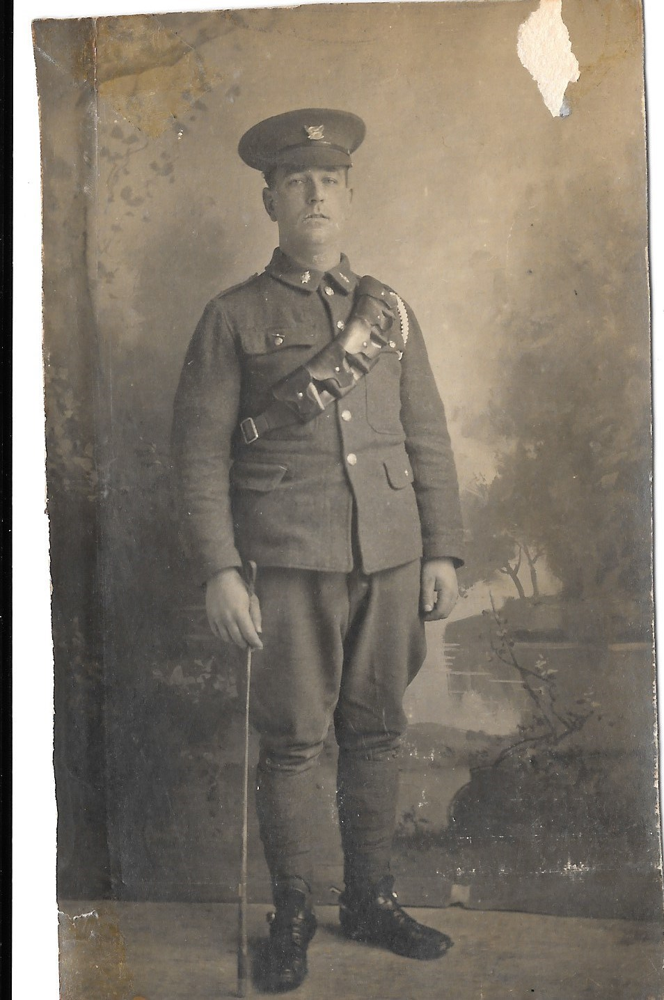

Arthur Albert Payton 1887 - 1973
[ Home ] | [ Calendar ] | [ Surnames Index ] | [ Family History ]A house decorator and the son of William Payton (a brickmaker) and Caroline Mount, Arthur Payton, the second cousin three-times-removed on the mother's side of <a href="I1.html">Nigel Horne</a>, was born in Herne, Kent, England on Aug 6, 1887<span class="citation">1,2,3,4,5</span>. He married Emily Austin at Christ Church, Herne Bay, Kent, England on Sep 23, 1908<span class="citation">7</span>.</p><p>Arthur spent all of his life in Kent, England. Throughout his life, he lived in several places around the county: on Brickfield Cottages, Eddington Lane in Herne Bay on Apr 5, 1891<span class="citation">1</span>; at Sea Street in Herne Bay on Jun 19, 1921<span class="citation">2</span> and on Sep 29, 1939<span class="citation">3</span>; and at 9 Clarendon Street in Herne Bay in 1973. Arthur In 1921 he was working at Jobbing Gardener, Own Account.<p>He died on Feb 24, 1973 in Canterbury, Kent<span class="citation">5,6</span>.
Parents
- William was born in 1844
- Caroline was born c. Aug 1849
Citations
- 1891 England, Wales & Scotland Census - Findmypast (was age 3 and the son of the head of the household)
- 1921 Census Of England & Wales - Findmypast (was age 33 and the head of the household)
- 1939 Register - Findmypast (was the head of the household)
- England & Wales births 1837-2006 - Findmypast
- England & Wales deaths 1837-2007 - Findmypast
- England & Wales Government Probate Death Index 1858-2019 - Findmypast
- England & Wales Marriages 1837-2005 - Findmypast
Media
Arthur Payton

England & Wales births 1837-2006 - BMD/B/1887/3/AZ/000435/154
England & Wales deaths 1837-2007 - BMD/D/1973/1/AZ/001068/009
1939 Register - TNA/R39/1739/1739F/002/35
England & Wales marriages 1837-2005 - BMD/M/1908/3/AZ/000302/069
Kent marriages and banns - GBPRS/CANT/M/97074346/1
Kent marriages and banns - GBPRS/CANT/M/94100479/1
England & Wales Government Probate Death Index 1858-2019 - GBOR/GOVPROBATE/C/1973-1973/00174296
1921 Census Of England & Wales - GBC/1921/RG15/04346/0209/01
Family Tree

Generated by Ged2Site. Last updated on Jul 20, 2025